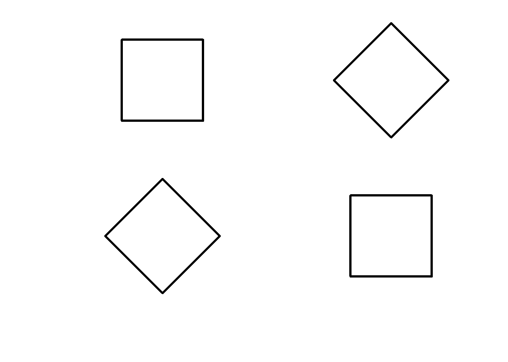
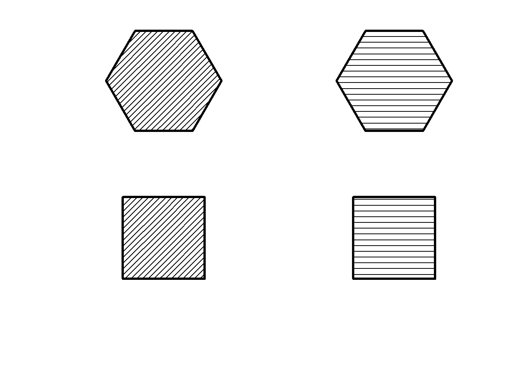
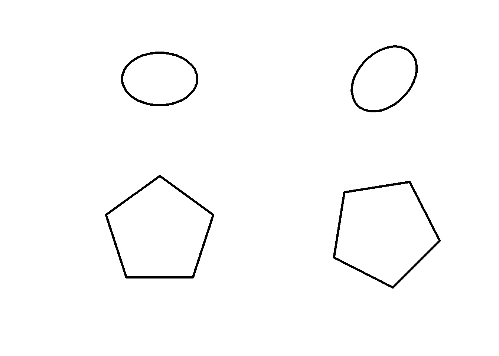
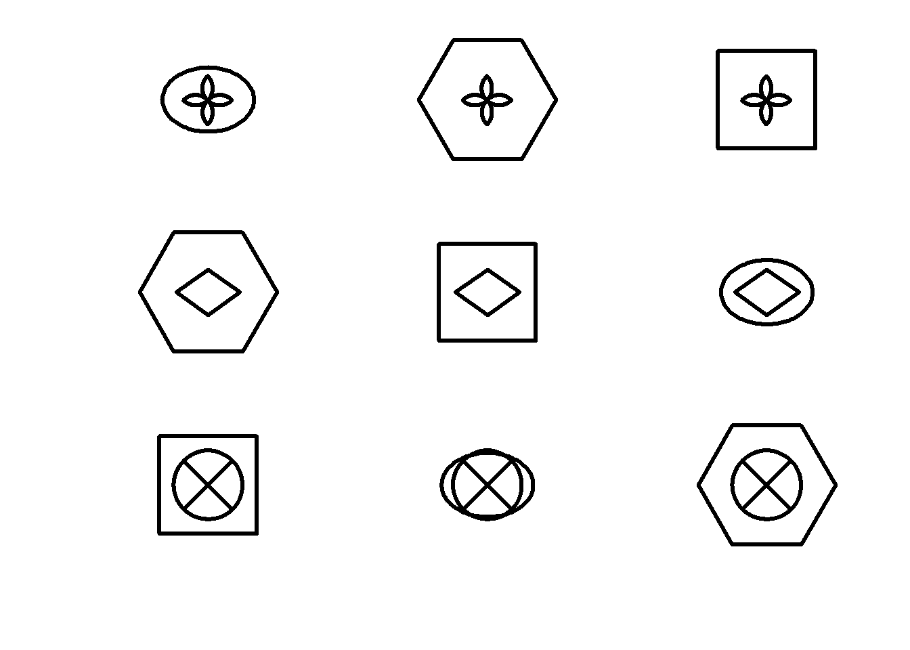
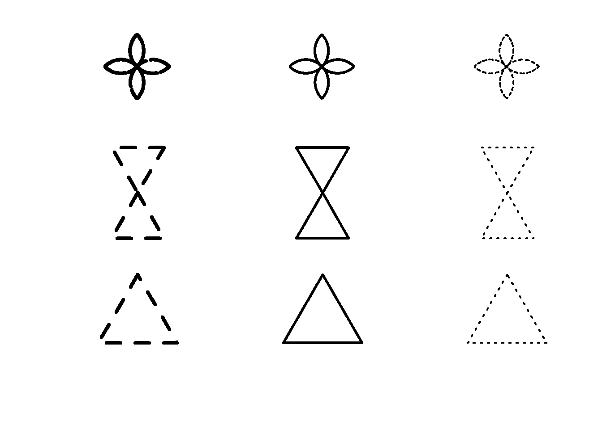
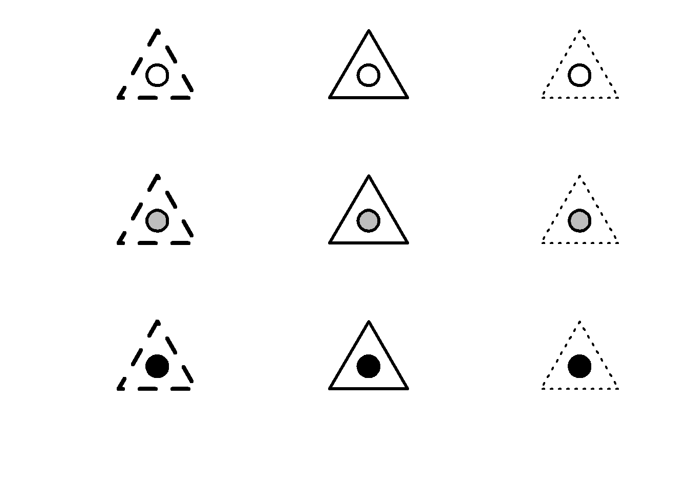
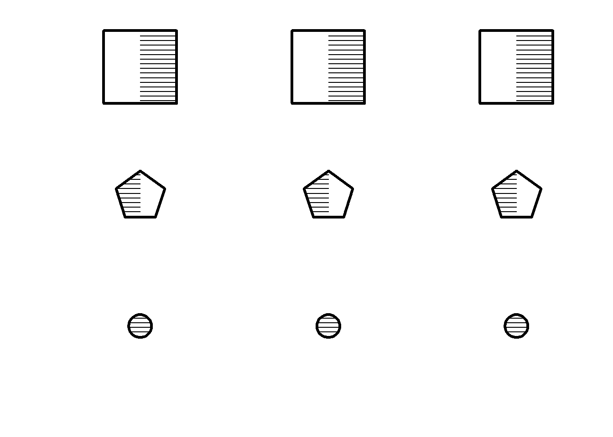
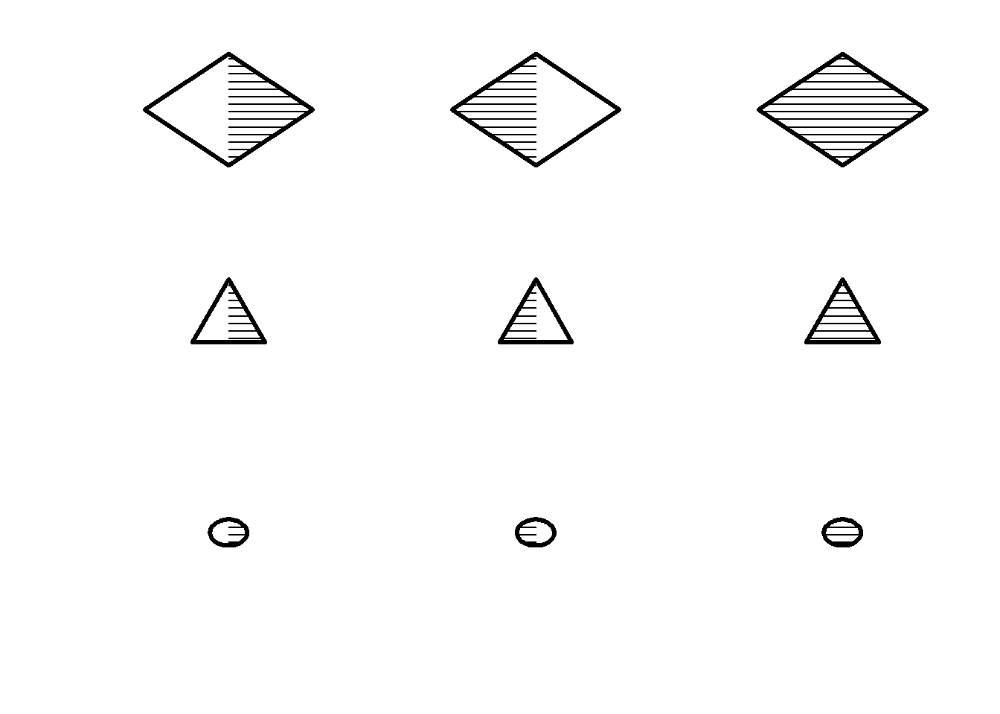
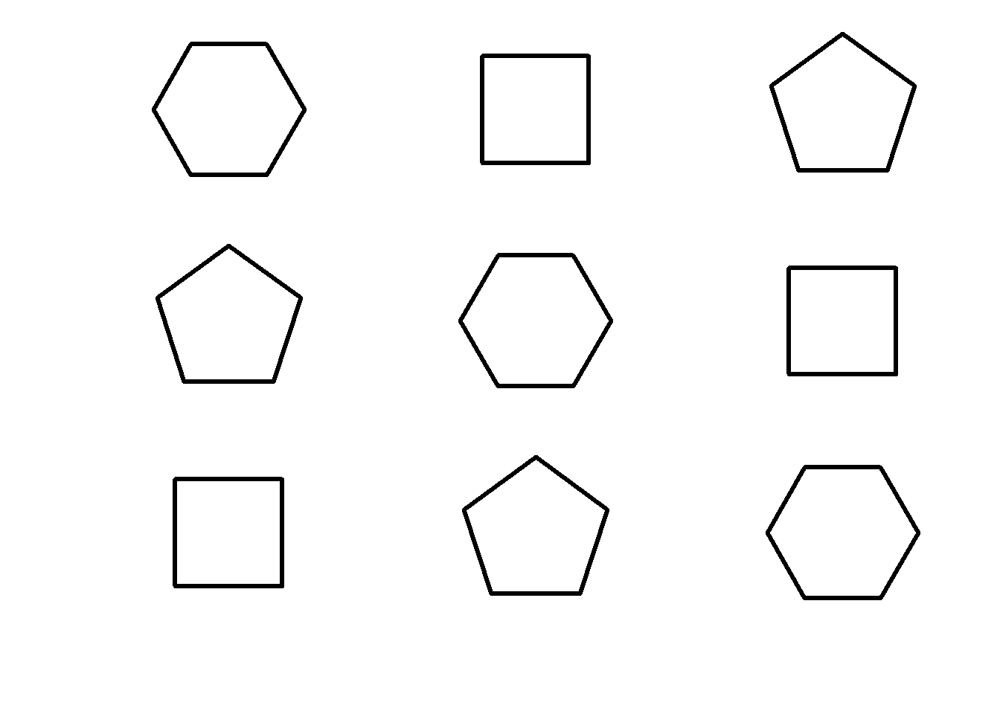

Available Matrix
Monotematiche
Righe semplici
Righe “complesse” verticali
# vertical outer canvas
draw(vline(pos.x=-50, s.x = 30, lwd = 1), bg = "white")
p = seq(-30, 30, by = 2)
q = c(abs(p[(length(p)/2):1]), abs(p[1:(length(p)/2)]))
for(i in 1:length(p)) {
draw(vline(pos.x = p[i], s.x=40, lwd = q[i]),
canvas = F, bg = "white")
}Matrici 2 \(\times\) 2
Rotazione

Forma e dimensione

Forma e riempimento
Forma e orientamento

Forma e bordo

Matrici \(3 \times 3\)
Forma e dimensione
Forma e rimepimento

Forma e orientamento
Forma e bordo


Rimepimento e orientamento
Riempimento e bordo

Forma riempimento bordo

Forma riempimento dimensione



